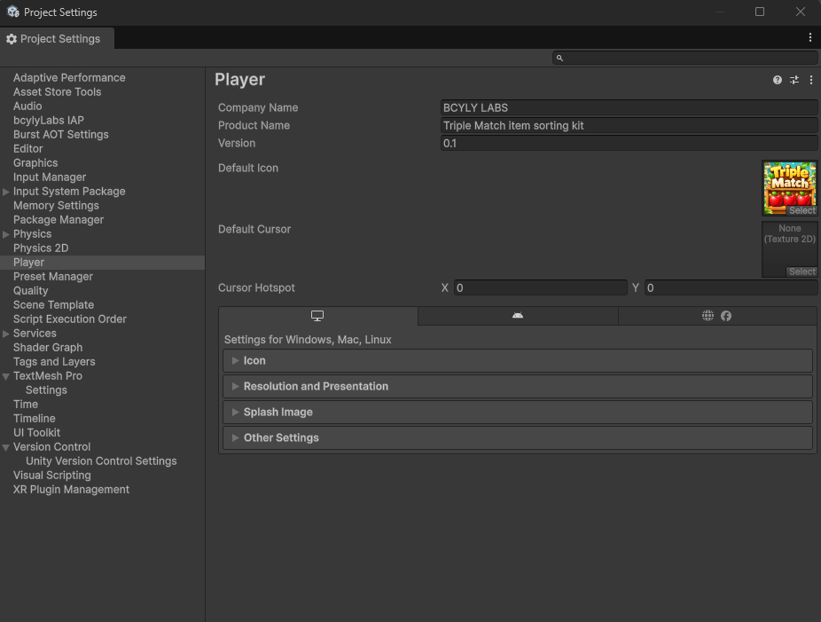
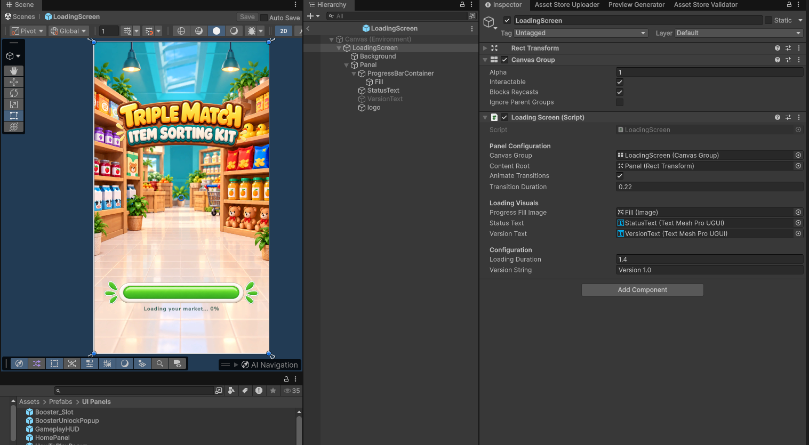
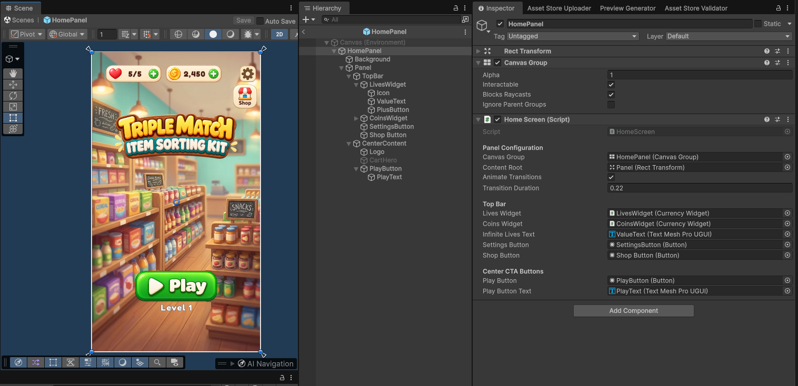
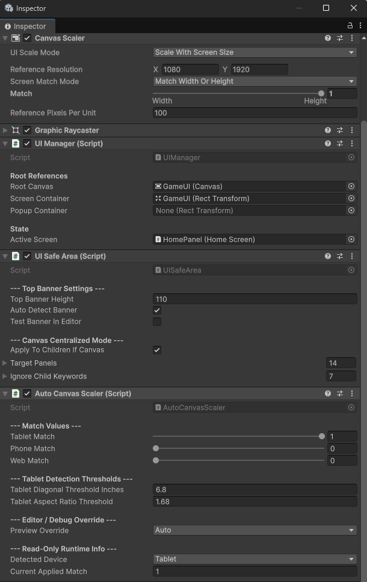

3. Rebrand the Game
Step-by-step instructions to replace app names, icons, loading screens, home panels, UI art, and auto-canvas scaling.
3.1 Change the app name and icon
-
01
Step 1
Open Edit > Project Settings > Player.
-
01
Step 1
Change Company Name and Product Name.
-
01
Assign your Default Icon
-
01
Step 1
Check the icon settings for your target platform too.

The product name does not replace the logo artwork inside the game. Replace that artwork separately.
3.2 Change the loading screen
Open Assets/Prefabs/UI Panels/LoadingScreen.prefab.
Expand its children in the Hierarchy. Select the background, logo, or text you want to replace. Change the image in its Image component, or change the text in its text component.
The Loading Screen component also has references for the progress bar, loading text, and version text. Loading Duration changes the displayed loading sequence duration. Version String changes its displayed version label.

3.3 Change the home screen
Open Assets/Prefabs/UI Panels/HomePanel.prefab.
Replace its logo and background. Select the Play button or another UI object to change its graphics. Keep the existing button and text references assigned in the Home Screen component.

3.4 Change any UI image, button, or text
Use the same steps for the home screen, loading screen, and popups:
| Change | What to select | What to edit |
|---|---|---|
| Background or logo | Its child object | Image > Source Image and Color |
| Button artwork | The button's graphic object | Image > Source Image; check the Button's transition settings too |
| Text | The text child object | Text, font asset, font size, color, and alignment |
| Position and size | The UI object | Rect Transform |
| Popup opening animation | The popup root | Animate Transitions and Transition Duration |
Use the loading and home screen images above to find the children. Some text objects use TextMeshPro; some booster labels use Unity's standard Text component. Edit the component that is actually on the object.
For a UI panel with rounded borders, keep the correct sprite borders and Image Type when replacing its sprite. Check the result at its final size.
3.5 Keep the UI readable on different screens
Select the main GameUI canvas. Check its Canvas Scaler and Auto Canvas Scaler components.

| Setting | What it does |
|---|---|
| Reference Resolution | The design size used by the Canvas Scaler. |
| Tablet Match | Chooses how the UI scales on tablets. The default favors height. |
| Phone Match | Chooses how the UI scales on phones. The default favors width. |
| Web Match | Chooses how the UI scales in a browser. |
| Tablet detection thresholds | Help the game decide whether the screen is a tablet. Usually keep these unchanged. |
| Preview Override | Lets you preview Auto, Phone, Tablet, or Web behavior. |
| Runtime information | Shows the detected device and applied match. These are status values. |
The automatic scaler can update the Canvas Scaler match value. Use its settings when adjusting device behavior. Return Preview Override to Auto after testing.